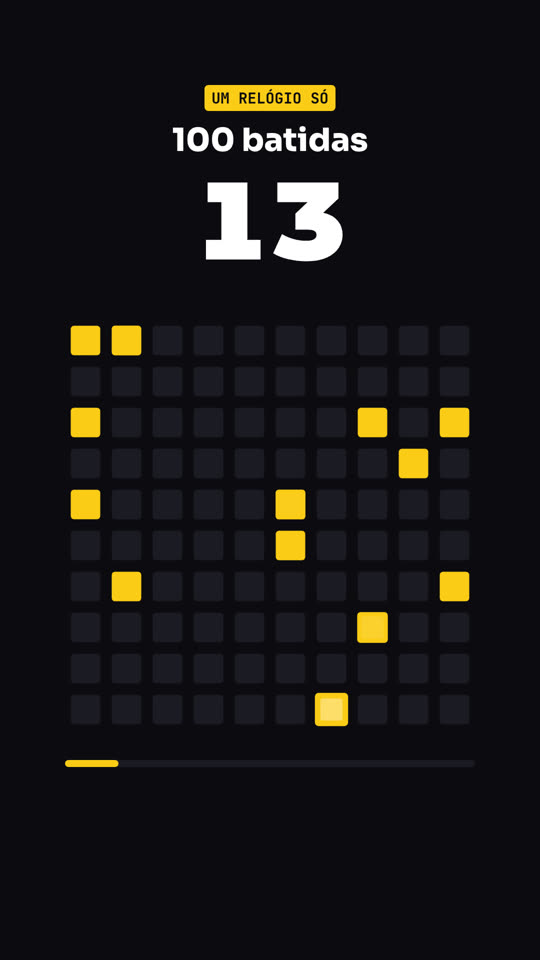
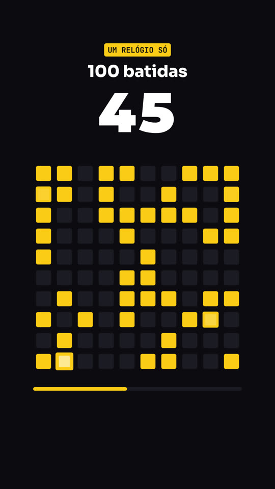

O som do seu vídeo vai cair no quadro exato da imagem, sem ajuste à mêo. É isso que o Relógio único faz.
Quem faz vídeo com código (ou pede para a IA fazer) perde horas acertando som, contador e animaçêo, e cada episódio novo começa do zero. Aqui uma lista só comanda tudo, e o próximo episódio sai trocando uma linha.
Em vídeo feito com código, o problema mais comum é o descompasso: o som chega um pouco antes, o número na tela nêo bate com a animaçêo, e cada episódio novo exige mexer em tudo de novo. Este kit junta três ideias que resolvem isso: um relógio único (uma lista de eventos com tempo, que a imagem, o contador e o som leem), som feito em código (batidas, estalos e pancadas gerados na hora, sem banco de efeitos) e série trocando uma linha (cada episódio é uma cópia do molde em que só um arquivo muda). Vem com uma demo pronta em HyperFrames. Para usar: Node.js e ffmpeg.
Vídeo
Entenda em poucos minutos
O vídeo explicando o kit entra aqui assim que for publicado.
As 3 ideias
Três ideias que economizam o retrabalho
Cada uma resolve um problema que aparece em todo vídeo feito com código.
1
Relógio único
O problema: a animaçêo tem um tempo, o contador tem outro, o som foi colado depois, e nada bate. A ideia: uma lista só de eventos ("aos 3,2 s acontece a batida 14"). Tudo o que se mexe pergunta a essa lista. Mudou um tempo, mudam os três juntos.
2
Som feito em código
O problema: procurar efeito sonoro, baixar, cortar, alinhar, e o mesmo som repetido 100 vezes cansa. A ideia: gerar cada som na hora (ruído + filtro + envelope), com pequenas variações, e colocar cada um no tempo do evento. Sem download e sem licença de efeito.
3
Série trocando uma linha
O problema: cada vídeo novo vira um projeto novo, e o canal perde a cara de série. A ideia: um molde fixo e uma planilha. Cada linha vira um episódio: copia o molde e reescreve só o arquivo do episódio. O visual e o ritmo ficam iguais.
Por que "sem física rodando": se a animaçêo depende de simulaçêo ou de sorteio sem semente, cada render sai diferente e o som perde o lugar. Aqui tudo é funçêo do tempo e de uma semente, entêo o mesmo vídeo sai idêntico toda vez, e cada episódio muda só a semente. Como usar ↓
A demo
100 batidas: o relógio único funcionando
Cada batida acende uma casa da grade no mesmo quadro em que a madeira soa. O tom sobe com a contagem e o som anda para o lado da coluna acesa. O contador e a barra leem a mesma lista. (HyperFrames é uma ferramenta grátis que transforma uma página HTML em vídeo, quadro a quadro: faz o papel do Remotion.)
0 s · grade apagada

4 s · 13 batidas, 13 casas

10 s · o ritmo acelera17 s · as 100 casas e o fecho
Os episódios de exemplo da planilha trocam o número de batidas, a cor e a forma (25 círculos azuis, 64 quadrados verdes, 144 círculos rosa) sem mexer no código.
Parte técnica
O kit: para quem faz vídeo com código
Daqui para baixo é a parte técnica: os arquivos, os comandos e como levar as peças para o seu projeto. Você nêo precisa desta parte para entender o que está acima.
O que é
Duas bibliotecas pequenas, uma ferramenta de série e uma demo
JavaScript puro. O relógio roda no navegador e no Node, por isso a imagem e o som usam o mesmo arquivo.
Peça
O que faz
relogio/relogio.js
batidas() cria N eventos entre dois tempos com ritmo (constante, acelera, freia); relogio() responde contar(t), ultimo(t), proximo(t), fase(t), desde(t), entre(a, b); rng(semente) é o sorteio repetível.
som/sintese.mjs
Sons: batida (madeira), fatia, estalo, baque, grao, molhado, plop. mixagem(duraçêo).poe(som, t, dB, pan) coloca cada um no tempo; gravarWav e normalizar (−15 LUFS, pelo ffmpeg).
serie/serie.mjs
Lê episodios.csv, copia o molde para episodios/<data>-<slug>/ e escreve só o episodio.js. Status: pendente → fazendo → pronto → aprovado → publicado.
exemplo/
A demo "100 batidas" em HyperFrames: js/linha.js (a lista), js/tela.js (a imagem), ferramentas/som.mjs (o som), episodio.js (o que muda).
copiar-kit.mjs
Copia o relógio e o som para <seu projeto>/kit/ (o HyperFrames só enxerga arquivos dentro da pasta do projeto).
Como funciona
Uma lista, três leitores
A lista é montada uma vez. A imagem pergunta "o que já aconteceu no tempo t?" a cada quadro; o som pergunta "quando acontece cada evento?" uma vez só.
episodio.js→linha.js (a lista)→tela.js (imagem + contador)+som.mjs (um som por evento)→HyperFrames (MP4)
// js/linha.js da demo (versêo simplificada): a única fonte de tempoimport { batidas, relogio } from'../kit/relogio.js';
export const R = relogio([
...batidas({ n: 100, de: 1.2, ate: 15.6, ritmo: 'acelera', tipo: 'batida' }),
{ t: 16.2, tipo: 'fim' },
]);
// na imagem: R.contar(t, 'batida') → o número do contador// no som: for (const e of R.eventos) mix.poe(batida(s), e.t, 0)
Na raiz do repositório. Pega o próximo pendente do serie/episodios.csv, copia a demo e escreve o episodio.js com os campos da linha e uma semente nova.
cd ..
node serie/serie.mjs # lista os episódios# node serie/serie.mjs novo → sem nome: o próximo pendentenode serie/serie.mjs novo 25-circulos # ou um pelo nome: cria episodios/<data>-25-circulos/cd episodios/*-25-circulos
node ferramentas/som.mjs
npx --yes hyperframes@0.9.37 render . -o renders/ep.mp4 --fps 30
3
Aprovar e marcar como publicado
Os status ficam no CSV. Só você marca aprovado.
node serie/serie.mjs status 25-circulos aprovado
node serie/serie.mjs status 25-circulos publicado
4
Levar o relógio e o som para o seu projeto
Copia as duas peças para <seu projeto>/kit/. Depois, no seu código, crie a lista com batidas() e relogio(), desenhe a partir de R.contar(t) / R.fase(t) e gere o som lendo R.eventos.
node copiar-kit.mjs ../meu-video # a pasta ../meu-video precisa existir; cria kit/relogio.js e kit/sintese.mjs
5
Usar a série com o seu molde
Em serie/serie.config.json, troque molde pela pasta do seu vídeo e arquivo/constante pelo nome do arquivo que muda por episódio. As colunas do CSV (menos slug e status) viram os campos do episódio.